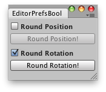

EditorPrefs.SetBool
public static void SetBool(string key,
bool value);
Description 描述
Sets the value of the preference identified by key.

Round rotations/positions and remember the active option.
using UnityEngine; using UnityEditor;
public class EditorPrefsBoolExample : EditorWindow { bool showRoundPosition = true; bool showRoundRotation = true;
[MenuItem("Examples/Round positions-rotations")] static void Init() { EditorPrefsBoolExample window = (EditorPrefsBoolExample)EditorWindow.GetWindow(typeof(EditorPrefsBoolExample), true, "My Empty Window"); window.Show(); }
void OnGUI() { showRoundPosition = EditorGUILayout.BeginToggleGroup("Round Position", showRoundPosition); if (GUILayout.Button("Round Position!")) DoRoundPosition(); EditorGUILayout.EndToggleGroup(); showRoundRotation = EditorGUILayout.BeginToggleGroup("Round Rotation", showRoundRotation); if (GUILayout.Button("Round Rotation!")) DoRoundRotation(); EditorGUILayout.EndToggleGroup(); }
void DoRoundPosition() { foreach (Transform t in Selection.transforms) t.localPosition = new Vector3(Mathf.Round(t.localPosition.x), Mathf.Round(t.localPosition.z), Mathf.Round(t.localPosition.y)); }
void DoRoundRotation() { foreach (Transform t in Selection.transforms) t.rotation = Quaternion.Euler( new Vector3(Mathf.Round(t.eulerAngles.x / 45f) * 45f, Mathf.Round(t.eulerAngles.y / 45f) * 45f, Mathf.Round(t.eulerAngles.z / 45f) * 45f)); }
void OnFocus() { if (EditorPrefs.HasKey("ShowRoundPosition")) showRoundPosition = EditorPrefs.GetBool("ShowRoundPosition"); if (EditorPrefs.HasKey("ShowRoundRotation")) showRoundPosition = EditorPrefs.GetBool("ShowRoundRotation"); }
void OnLostFocus() { EditorPrefs.SetBool("ShowRoundPosition", showRoundPosition); EditorPrefs.SetBool("ShowRoundRotation", showRoundRotation); }
void OnDestroy() { EditorPrefs.SetBool("ShowRoundPosition", showRoundPosition); EditorPrefs.SetBool("ShowRoundRotation", showRoundRotation); } }